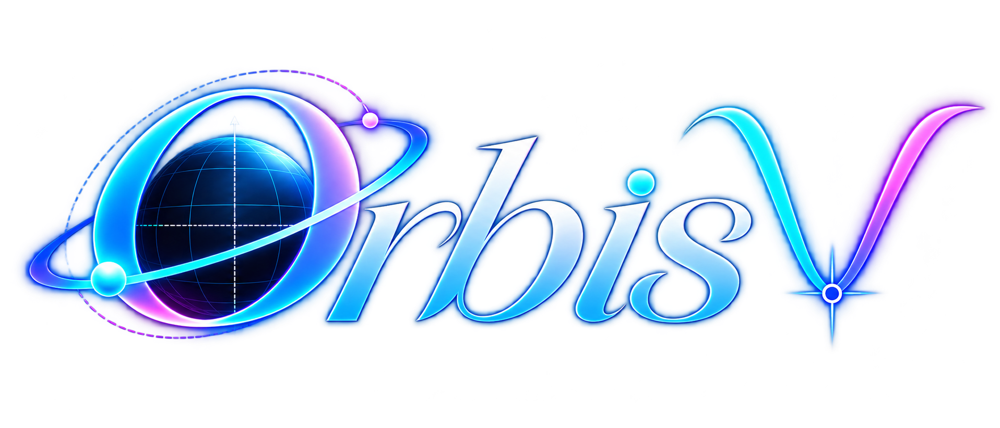
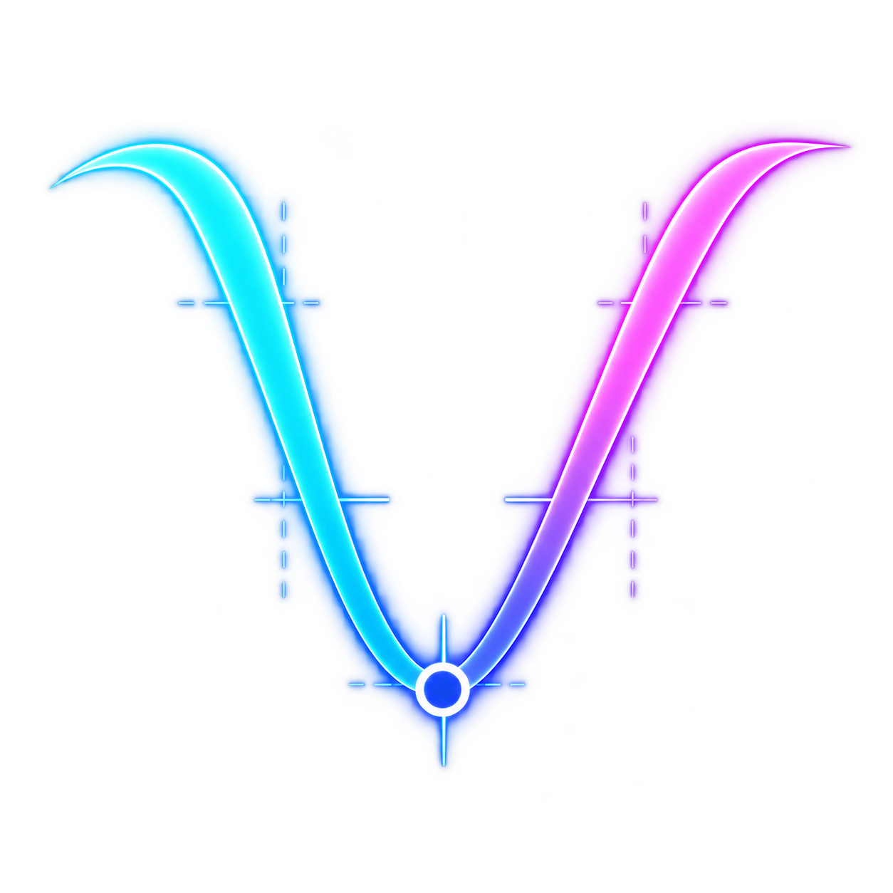

OrbisV
Construa sua visualização
Adicione uma função, vetor ou objeto geométrico.
x = 0 · y = 0
Arraste para mover o plano, use pinça ou roda para zoom. No modo Inspecionar, mova o ponteiro ou o dedo sobre o gráfico para comparar valores.